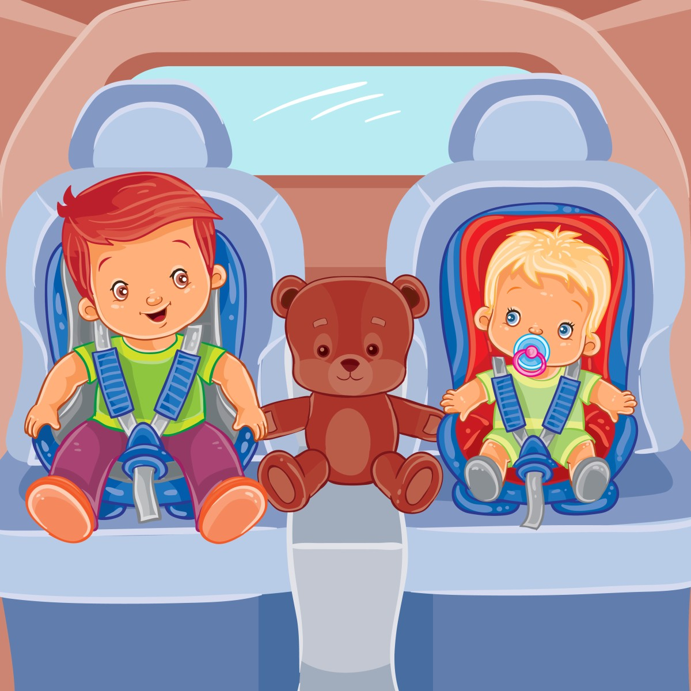

Аренда прокат детских автокресел бустеров в Казани 200 р
Если вы планируете автомобильное путешествие с ребенком, важно обеспечить его безопасность. Для этого нужно использовать надежное и комфортное автокресло, в котором ребенок сможет отдыхать и играть. В Казани вы всегда можете недорого арендовать детское автокресло или бустер.
У нас есть автокресла с анатомической формой каркаса из прочного полипропилена, пятиточечными ремнями безопасности с тремя уровнями регулировки по высоте и мягкими плечевыми накладками. Автокресло подходит для детей весом от 0 до 18 кг, а бустер — от 15 до 36 кг.
Прокат стоит всего 200 рублей за один календарный день. Мы всегда рады помочь вам сделать поездку безопасной и комфортной для вашего ребенка!
Ответы на вопросы:
1. Вопрос: Какие бывают детские автокресла?
Ответ:
Детские автокресла классифицируются по весу, возрасту и росту ребёнка. Кроме того, есть универсальные модели, которые можно настроить под разные возрастные группы.
Группы автокресел:
1. Группа 0 (до 10 кг, примерно до 6 месяцев).
2. Группа 0+ (до 13 кг, примерно до 15 месяцев).
3. Группа 1 (9–18 кг, примерно 1–4 года).
4. Группа 2 (15–25 кг, примерно 3–7 лет).
5. Группа 3 (22–36 кг, примерно 6–12 лет).
2. Вопрос: Для чего нужны детское автокресло и бустер в автомобиле?
Ответ:
Детское автокресло:
Главная цель — защитить ребёнка в автомобиле: от возможных травм при аварии, резком торможении или неожиданном манёвре водителя.
1. Штатные ремни не годятся для детей. Они предназначены для взрослых, и если
использовать их для ребёнка, диагональная лямка окажется не поперёк груди и
таза, а рядом с шеей и животом.
2. Идеальная фиксация. Автокресло оборудовано особыми ремнями, которые надежно
удерживают ребенка в безопасном положении. Эти ремни можно настроить по высоте и
плотности, чтобы они не вызывали дискомфорта и при этом не позволяли ребенку
двигаться.
3. Амортизация нагрузки. Специальные мягкие элементы и усиленные боковые части
кресла эффективно поглощают энергию удара.
4. Законодательное требование. Согласно Правилам дорожного движения РФ (п.
22.9), для перевозки детей младше 7 лет необходимо использовать детские
удерживающие устройства (ДУУ), подходящие им по весу и росту. На переднем
сиденье такие устройства обязательны для всех детей до 12 лет.
Бустер:
Главная задача — обеспечить оптимальное положение ребёнка для корректного использования штатного ремня безопасности.
3. Вопрос: Почему двигатель автомобиля не запускается припопытке прикурить его от другого авто с помощью пусковых проводов?
Ответ:
Прикурить двигатель от другого автомобиля с помощью пусковых
проводов не удаётся
из-за их недостаточной толщины и низкого ампеража, которые не могут передать
необходимый стартовый ток. Кроме того, проблема может возникнуть, если провода
старые или повреждены.
Использование проводов для прикуривания может быть опасным и привести к поломке
автомобиля.
4. Вопрос: Нужно ли и сколько времени ездить на автомобиле после прикуривания аккумулятора?
Ответ:
В течение 30-60 минут рекомендуется использовать автомобиль. Важно, чтобы двигатель работал не на холостом ходу, а чтоб двигатель работал в движение. Это даст генератору возможность подзарядить аккумулятор. Однако для полной зарядки аккумулятора и восстановления его рабочих характеристик рекомендуется подключить его к зарядному устройству.
Отзывы об услуге: 5
Оля
Хороший парень, приехал, запустил, всё рассказал.
Анастасия
Приехал быстро и прикурил быстро.
Коля
Спасибо, машина долго стояла, не могли прикурить от двух машин. Вызвал данную помощь, прикурили с полпинка, удивительно.
Анна
Все супер, цена хорошая.
Динар
Постоянно вызываю прикурить генератор на стройку, запускает без проблем, лудшая цена по Казани.